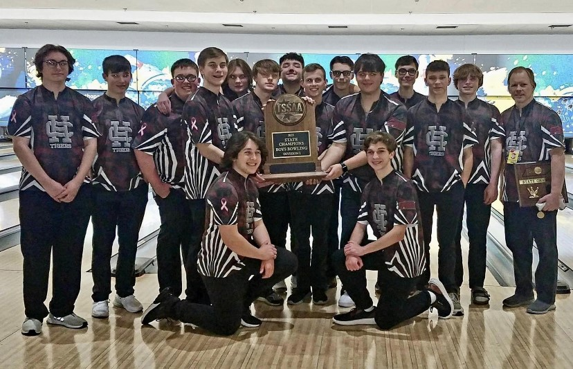

My Degree:
My name is Ben Howard and I am currently attending the University of North Alabama to pursue a bachelor's degree
in chemical engineering. I plan on attending UNA for the first two years and then transferring to Mississippi State University
to finish my degree. At MSU, I will co-op out and work with a local manufacturing plant before graduating. With this
degree, I plan to work in the manufacturing business as an engineer at PCA in Counce, TN.
My Hobbies:
My hobbies consist of playing video games, bowling, and playing music. Whenever I have freetime, I like to relax
and play games with my friends or just sit in my chair and play my guitar. Playing music has always been a passion of
mine ever since elementary school. Also, bowling has been a big thing for me since I was in the 2nd grade. I was on our
school’s team up until college where I decided I no longer wanted to bowl for a team.

My Accomplishments:
Most of my major accomplishments come from my time on the Hardin County High School
bowling team. While I was on the team, I dedicated tons of time to perfecting my game and it